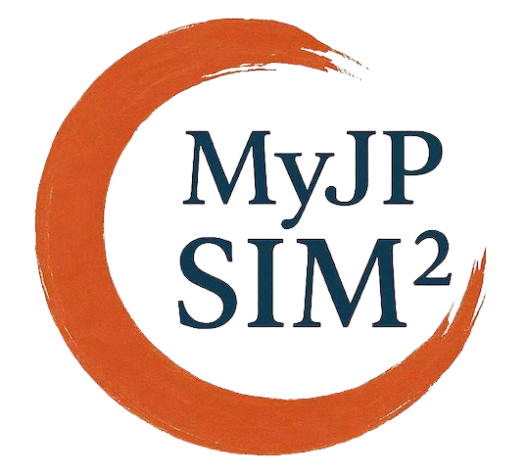
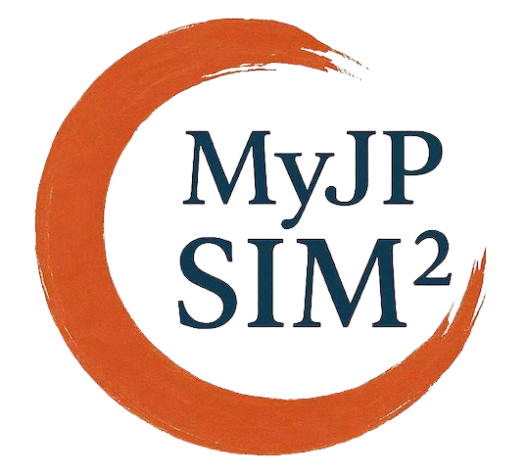
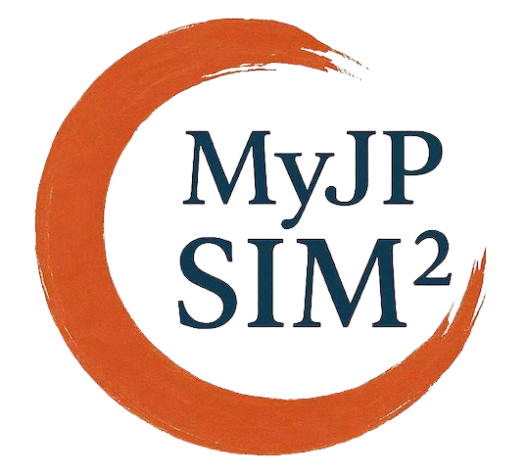

経営意思決定支援
営業サポート
市場開発個人化
Supply Chain
採用・労務人事
顧客対応自動化
財務最適化
AI生産システム

 

|
|

|
|
データサイエンス＆計量経済学研究室 Data Science & Econometrics Laboratory |
|
データサイエンス・機械学習・計量経済学 社会科学＆自然科学に活用 |
|
|||||||||||||||
|

|
教 授 劉 慶豊
法政大学理工学部経営システム工学科 学科主任 出 身 中国内モンゴル自治区 学 位 京都大学経済学博士 研 究 学術論文 趣 味 バトミントン・園芸 E-mail qliu[at]hosei.ac.jp |
|
劉 慶豊 教授は、データサイエンス、計量経済学、機械学習（人工知能の基盤となる技術）の分野で研究を行っている。 現在、法政大学理工学部の教授を務め、ニューヨーク大学グローバル公衆衛生学院の共同研究員も兼任する。 京都大学で経済学博士号を取得後に渡米し、Princeton Universityでポストドクトラル研究員として研究に従事した。 これまでに京都大学および米国Columbia Universityで客員教授・訪問研究者として研究を行った経験がある。 研究成果はJournal of Business & Economic Statistics、 Econometrics Journal、Econometric Reviewsなどの国際誌に掲載され、 Economics、Open Economicsの編集委員も務めている。 受賞歴として、新潟大学経済学会賞、ACIEK(Winter)-IMIP 2024の傑出した貢献賞やIEOM 2024東京大会の優秀会議賞などがある。近年は、機械学習と計量経済学の融合を進め、 日本学術振興会（JSPS）の科学研究費と全国銀行学術研究振興財団の学術研究助成を得て、連合学習（Federated Machine Learning）というプライバシー保護を重視した経済分析の新しい機械学習の手法を探求している。 劉教授は、データサイエンスの分野で、経済問題の解決と産業技術の発展のために、機械学習と計量経済学の手法を開発し、 IoT、ビッグデータ解析、フィンテックなどを活用して、第四次産業革命とSociety5.0に向けたソリューションを提供することを目指している。
信 条 やると決めたら楽しくやる、やるからには必ず極める。 |

|
|
2024年度卒業生
[1] 機械学習を用いた順位予測モデルの構築と精度評価：競馬予測を事例として, 岩﨑照英, 田中幸佑, 徳丸颯太,
(2025).
[2] テクニカル指標と株価変動の関連性に関する実証分析, 久保村光汰, (2025). [3] サッカーにおける戦略策定を目的としたデータ分析, 下村勘太, 林雅哉, (2025). [4] 機械学習を用いた不正会計の検出と分析, 田嶋俊紀, 平田円, (2025). |
|
2023年度卒業生 |
|
2022年度卒業生
[1] ツイートデータとインデックスデータを併用した株価騰落予測, 黒崎地大, 山田壮雄, (2023).
[2] 人口問題におけるテレワーク推進と移住支援策がもたらす効果について, 大島宙也, 前田翼, (2023). [3] サッカーの勝敗要因に関するデータ分析 伊藤光毅, 鹿野紘樹, 北林良太, (2023). |
|
2024年度修士課程修了生
[1] Adversarial Autoencoderを用いたVertical Federated Learning, 黄凱, (2025修了予定).
[2] Differential Machine Learningを用いたラフ・ボラティリティモデルのキャリブレーション, 黒崎地大, (2025修了予定). |
|
2024年度卒業生・修士課程修了生就職先
大手監査法人、警視庁、フィナンシャルアドバイザリー会社、大手地方銀行、大手カード会社、大手総合コンサルティング会社、大手自動車メーカーデータサイエンス部門、大手IT企業ソフトウエア開発部門(Job採用)
|
|